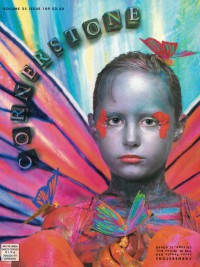

CMnexus
:
Contemporary Christian culture, music, and media.
Magazines
Profiles
Dove Awards
cmnexus.org
CM
nexus
→
Magazine list
→
Cornerstone
→
Issues
Cornerstone
, 1996, vol. 25, iss. 109
< -- Prev
Issue list
Next -- >
Cover

Writers in this Issue
Boyd, Tammy
Canfield, David
Harold, Chris
Hill, Don
Mortimer, David
Article:
"Creative Spark"
Veggietales
Interview:
The Waterboys
(Mike Scott) by Chris Harold, David Mortimer
Blaster the Rocketboy
by David Canfield
Album Review:
Victoria Williams
-
This Moment In Toronto
by Tammy Boyd
Robert Robertson & Henry Wiens
-
From the Heart
by David Canfield
Fourth Estate
-
See What I See
by David Canfield
Leaderdogs for the Blind
-
Lemonade
by Don Hill
Galactic Cowboys
-
Machine Fish
by David Canfield
Stavesacre
-
Friction
by David Canfield
Plankeye
-
Commonwealth
by David Canfield
The Supertones
-
The Adventures of the O.C. Supertones
by Don Hill
Common Children
-
Skywire
by David Canfield
Paradigm Shift
-
Paradigm Shift
by David Canfield
Iona
-
Journey Into the Morn
by David Canfield
Everdown
-
Straining
by Don Hill
Andy Young
-
Way Beyond A Thousand Summers
by David Canfield
Them Apples
-
All Groan Up
by David Canfield
Relevant Links
Official web site of Cornerstone
You may be able to find
Cornerstone
in a library near you:
check
Worldcat
< -- Prev
Issue list
Next -- >
CMnexus
(noun)
The magazine index
of modern music
and Christianity
© 2011 CMnexus. Last updated December 2020.
Contact:
Rants and other correspondence to:
editor -AT- cmnexus
-DØT- org
About